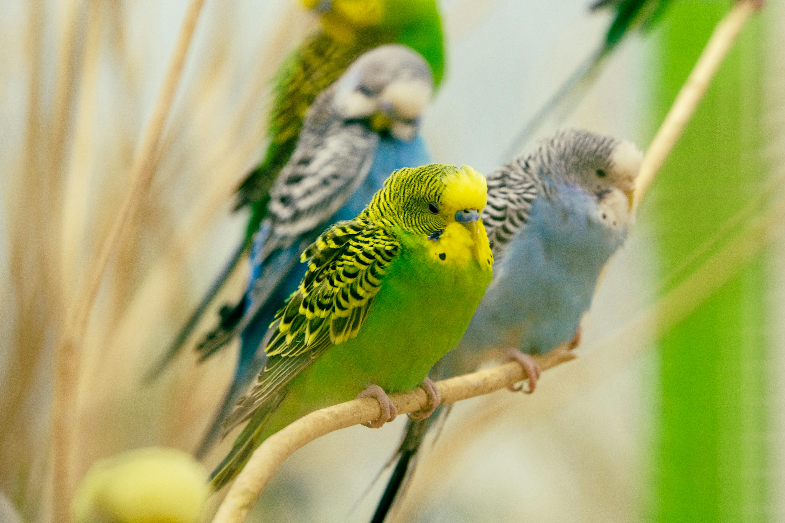
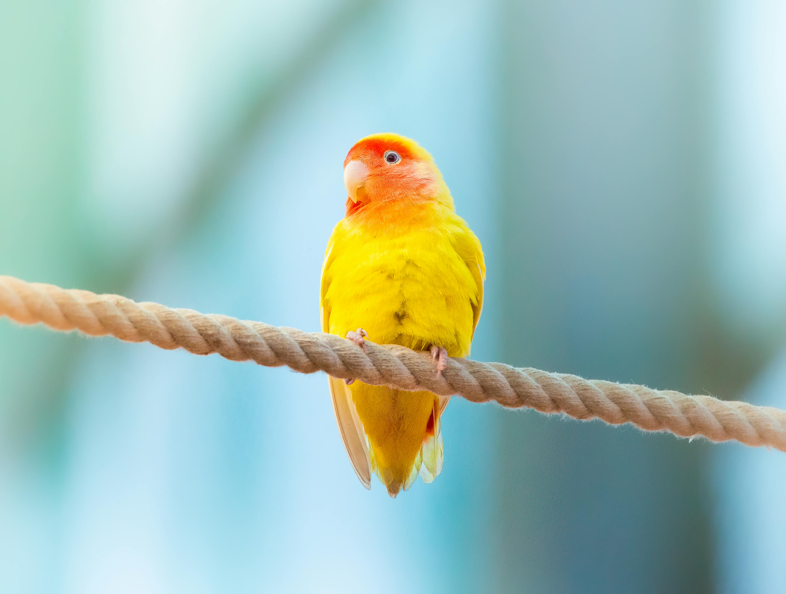
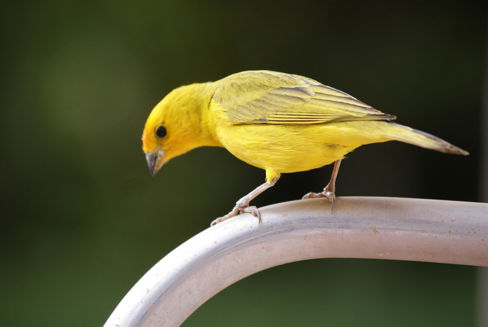
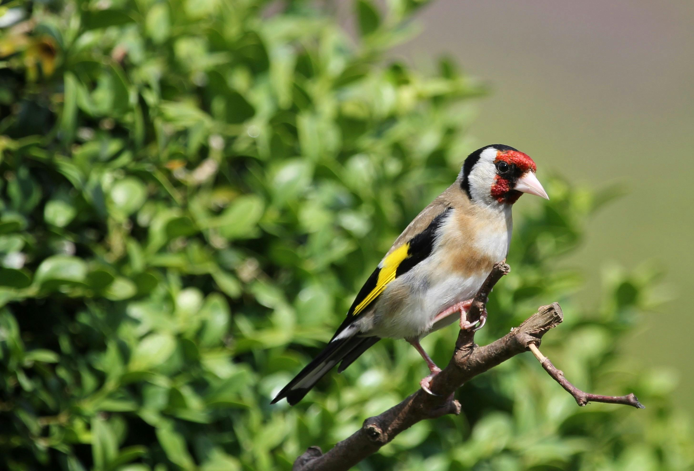
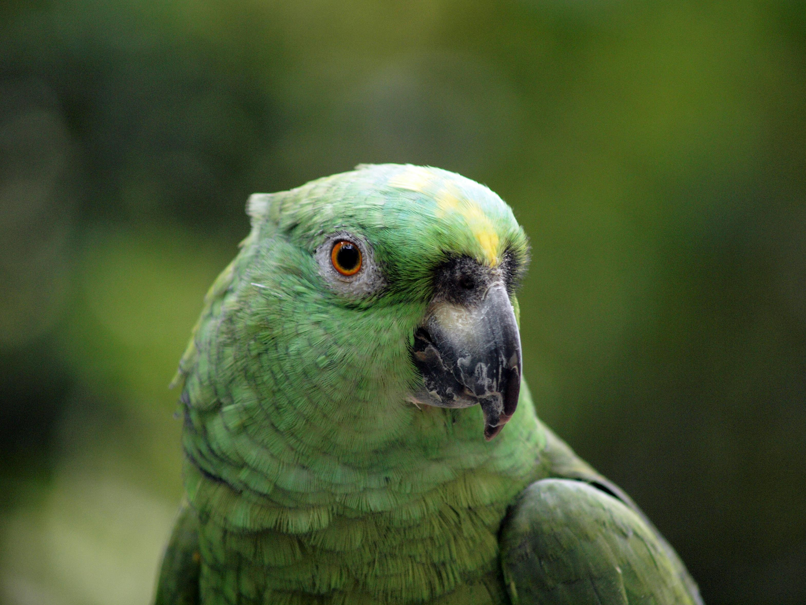
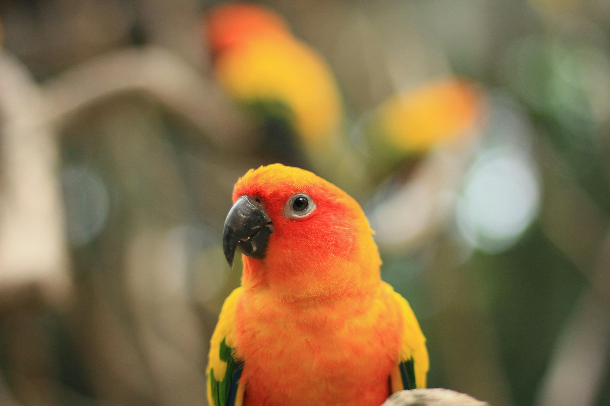

Top 10 Foreign Bird Breeds
1. African Grey Parrot

The African Grey Parrot is renowned for its intelligence and remarkable ability to mimic human speech. With striking grey feathers and bright red tail feathers, they are captivating birds to observe. These parrots thrive on social interaction and require mental stimulation to prevent boredom. African Greys can form deep bonds with their owners and often seek companionship. They are also known to exhibit a wide range of emotions, making them sensitive pets.
Group – Parrots
Height – 12 to 14 inches
Weight – 12 to 16 oz
Life Span – 40 to 60 years
2. Budgerigar
Commonly known as Budgies, Budgerigars are small, colorful parakeets that are popular pets worldwide. They are social birds that thrive in pairs or small groups, known for their playful and affectionate nature. Budgies come in various colors and can be taught to mimic words and sounds. They require a spacious cage and plenty of toys to keep them mentally engaged. Additionally, Budgies are relatively easy to care for, making them suitable for first-time bird owners.
Group – Parakeets
Height – 7 to 8 inches
Weight – 1 oz
Life Span – 5 to 10 years
3. Cockatiel

Cockatiels are small parrots known for their charming crests and friendly dispositions. They can be trained to whistle and mimic sounds, which makes them popular pets. Cockatiels thrive on social interaction and often enjoy spending time outside their cages. Their playful nature means they require plenty of toys and mental stimulation. Cockatiels also have distinct personalities and can be quite affectionate with their owners.
Group – Cockatoos
Height – 12 to 14 inches
Weight – 3 to 4 oz
Life Span – 10 to 15 years
4. Macaw

Macaws are large, vibrant parrots recognized for their striking colors and long tails. These birds are known for their playful personalities and intelligence. They require ample space to fly and play, making them better suited for experienced bird owners. Macaws thrive on social interaction and can form strong bonds with their human companions. They are highly vocal and can learn to mimic a variety of sounds and words.
Group – Parrots
Height – 24 to 40 inches
Weight – 2 to 4 lbs
Life Span – 30 to 50 years
5. Lovebird
Lovebirds are small, affectionate parrots known for their strong pair bonds. They are social birds that thrive in pairs, often seen cuddling and grooming each other. Lovebirds come in a variety of colors and are playful and curious by nature. They require plenty of mental stimulation, including toys and interaction with their owners. Due to their sociable behavior, lovebirds are best kept in pairs or small groups to keep them happy and engaged.
Group – Parrots
Height – 5 to 7 inches
Weight – 2 oz
Life Span – 10 to 15 years
6. Canary
Canaries are small songbirds celebrated for their beautiful singing and vibrant colors. They are easy to care for and can be kept alone or in pairs, though they prefer a calm environment. Canaries are known for their gentle nature and do not typically require much interaction, making them suitable for busy owners. They come in various colors and patterns, including yellow, orange, and white. Their melodious singing can be a delightful addition to any home.
Group – Songbirds
Height – 5 to 6 inches
Weight – 1 oz
Life Span – 10 to 15 years
7. Finch
Finches are small, social birds that come in a variety of species and colors. They are active and love to chirp and interact with each other, making them entertaining pets. Finches thrive in flocks and are happiest when kept in pairs or groups. They require a spacious cage with plenty of perches and toys to keep them engaged. Additionally, finches are known for their gentle nature and can live harmoniously with other small birds.
Group – Songbirds
Height – 4 to 7 inches
Weight – 0.5 to 1 oz
Life Span – 5 to 10 years
8. Parrotlet
Parrotlets are small, feisty parrots that pack a lot of personality into their tiny bodies. They are known for their curious and playful behavior, often engaging in acrobatics and playtime. Despite their small size, they are very social and can be quite vocal. Parrotlets enjoy interacting with their owners and can be trained to perform tricks. They thrive in an environment filled with toys and mental stimulation to keep them happy and healthy.
Group – Parrots
Height – 4 to 5 inches
Weight – 1 oz
Life Span – 15 to 20 years
9. Quaker Parrot

Quaker Parrots, also known as Monk Parakeets, are medium-sized parrots known for their playful and friendly demeanor. They are intelligent birds that can learn to talk and mimic sounds. Quakers are highly social and require a lot of interaction and mental stimulation to thrive. They are often kept in pairs and enjoy climbing and playing with toys. Quakers have a charming personality and can be very affectionate with their owners.
Group – Parrots
Height – 9 to 10 inches
Weight – 3 to 5 oz
Life Span – 15 to 30 years
10. Conure
Conures are small to medium-sized parrots that are known for their playful and energetic nature. They are social birds that enjoy being around people and can be quite vocal. Conures come in various colors, including green, yellow, and orange, and are often kept as pets for their friendly disposition. They thrive on interaction and require plenty of toys to keep them occupied. With their affectionate personalities, conures can make delightful companions.
Group – Parrots
Height – 10 to 12 inches
Weight – 4 to 5 oz
Life Span – 15 to 30 years